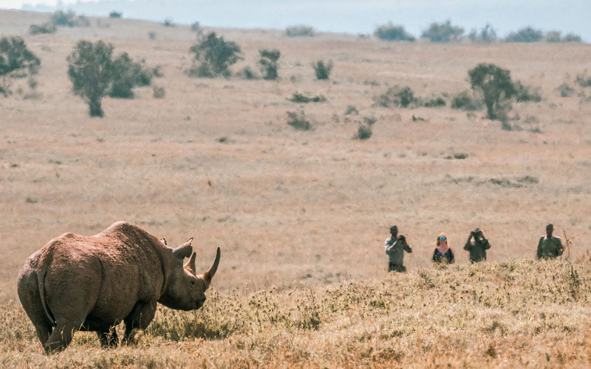

Tracking Rhino
at First Light
Walk with the anti‑poaching team at dawn and learn how black and white rhino are tracked, identified and protected. Ninety minutes to two hours, with a high chance of a sighting.
Signature WalkEstablished MMII · Printed on the Frontier
Front Page · Field Report
Nissa Ole Kinyaga leads guests into the wild heart of Borana at first light — tracking black rhino on foot, reading the bush he was raised in.
Born in the Mukogodo Forest, a Laikipia Maasai of the Il Ngwesi, he was raised by the bush long before any classroom. His first post in conservation was as a radio signaller at Lewa Wildlife Conservancy — ears to the land, learning how people and wildlife might thrive as one.
He went on to Kenya Utalii College for his Advanced Tour Guiding Certificate, then kept going: ornithology, walking wild safaris, astronomy, first aid. In 2002 he turned full‑time. Today he guides at Lengishu, in Kenya's most successful rhino sanctuary, as one of just fifty‑nine Silver Guides in the country.
Walk with the anti‑poaching team at dawn and learn how black and white rhino are tracked, identified and protected. Ninety minutes to two hours, with a high chance of a sighting.
Signature WalkThe Big Five by daylight; porcupine, honey badger and leopard once the dark comes down over the conservancy. Northern Kenya at every hour.
Dawn to DuskRead the small details on foot, ride among giraffe with Mount Kenya beyond, then trace the southern skies after sundown with a trained eye.
The Slow Country
It's wonderful that I can provide for my family doing what I love — knowing my work has purpose, that I am making a difference every day.— Nissa Ole Kinyaga, Silver Guide

Public Notice · Open Enquiries
Tell me what moves you — rhino at dawn, a leopard at dusk, the southern stars — and I'll shape a journey across Borana around it.